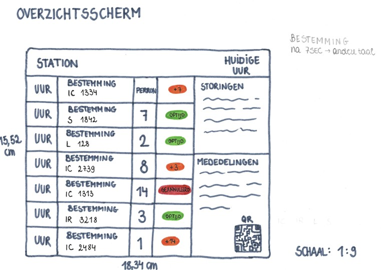
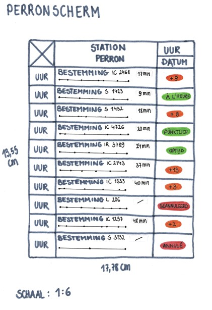
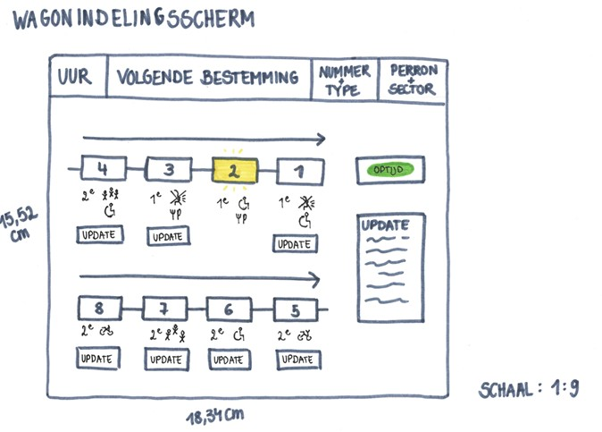

1. De status van de treinen heb ik verdeeld in 3 kleuren; Rood voor een geannuleerde trein, oranje voor een trein met vertraging en groen voor een trein die op tijd is. Op deze manier kunnen reizigers die gehaast zijn snel zien welke status hun trein heeft. Als hier gebruik wordt gemaakt van woorden zullen deze om de 7 seconden verspringen van taal bij treinen waar nodig.
2. Storingen en mededelingen heb ik op 2 aparte vensters gezet zodat reizigers een duidelijk onderscheid kunnen maken tussen storingen van de treinen of algemene mededelingen.
3. In mijn eerste schets had in symbolen voorzien voor de verschillende types treinen. In mijn tweede schets heb ik dit veranderd naar afkortingen omdat symbolen snel voor verwarringen kunnen zorgen als reizigers een slechter zicht hebben of het verschil tussen de symbolen niet kennen.
1. De bestemming van de trein zal na 7 seconden in een andere taal staan bij treinen die door deze taalgebieden rijden. De bedoeling is dat deze van taal verspringen. Ik heb gekozen om het te laten verspringen en niet te laten verschuiven omdat het dan duidelijk een andere taal is. Als we deze tekst laten verschuiven is er een kans dat er verwarring ontstaat en dat reizigers denken dat het een andere bestemming is.
1. In mijn vorige ontwerpen heb ik geen gebruik gemaakt van een schaal. In dit ontwerp heb ik de schaal 1:9 gebruikt.

1. De status van de treinen heb ik verdeeld in 3 kleuren; Rood voor een geannuleerde trein, oranje voor een trein met vertraging en groen voor een trein die op tijd is. Op deze manier kunnen reizigers die gehaast zijn snel zien welke status hun trein heeft. Als hier gebruik wordt gemaakt van woorden zullen deze om de 7 seconden verspringen van taal bij treinen waar nodig.
2. Ook op de perronschermen heb ik de symbolen van het type trein veranderd door afkortingen zodat dit overal gelijk is.
3. Ook op deze borden zullen de bestemmingen van taal verspringen na 7 seconden.
1. Een aftelklokje bij elke trein zodat reizigers weten hoelang ze nog hebben voordat hun trein aankomt op het perron.
1. In mijn vorige ontwerpen heb ik geen gebruik gemaakt van een schaal. In dit ontwerp heb ik de schaal 1:6 gebruikt.
1. De bolletjes op de tijdlijn van de bestemmingen staan voor de toekomstige haltes, , de haltes voor het station waar de reiziger zich bevindt is niet zichtbaar op deze lijn.

1. In mijn vorige schets stond wagon 1 rechtsonder en wagon 8 (de laatste wagon) linksboven. Dit heb ik aangepast zodat wagon 1 rechtsboven staat en wagon 8 linksonder staat.
2. De kader voor de updates van de wagon waarin de reizigers zich bevinden heb ik verplaatst van onder de wagon, naar rechts van het scherm zodat de aanpassingen voor hun eigen wagon groot en duidelijk zijn.
3. De status van de trein staat nu horizontaal, in mijn vorige schets stond deze verticaal om plaats te besparen, maar ik heb ondervonden dat verticaal lezen veel meer moeite en tijd vraagt voor mensen, dus om het wat makkelijker te maken staat het nu horizontaal.
4. In mijn vorige schets had in nog geen concrete iconen voor fietsen, rolstoelen etc., deze heb ik nu wel toegevoegd aan mijn schets.
1. De wagon waarin de reizigers zich bevinden zal verlicht zijn zodat ze ten allen tijden kunnen zien waar ze zich bevinden in de trein.
1. In mijn vorige ontwerpen heb ik geen gebruik gemaakt van een schaal. In dit ontwerp heb ik de schaal 1:9 gebruikt.